Ringraziamenti
- Questa presentazione è basata in gran parte
sul materiale di presentazioni tenute da Ivan Herman, W3C
Semantic Web Activity Lead
- Il materiale di questa presentazione può
essere riutilizzato nel rispetto delle leggi sul
copyright e delle regole del W3C
- Un particolare ringraziamento agli organizzatori di
Web Senza
Barriere '08 per avermi invitato a tenere questo
seminario
Lo cerco sul Web…
I limiti del Web attuale
- Nel web tradizionale si rappresenta l'
informazione utilizzando:
- linguaggio naturale
- grafica, elementi multimediali, struttura della
pagina
- Spesso è necessario combinare le
informazioni (provenienti da fonti diverse)
-
Per gli esseri umani è facile ...
- dedurre fatti da informazioni incomplete
- creare e seguire associazioni mentali
- provare varie esperienze sensoriali
- aggregare le informazioni indipendentemente dalle
tecnologie utilizzate
- ... ma le macchine non sono intelligenti!
- non possono utilizzare informazioni parziali
- hanno difficoltà ad aggregare informazioni
strutturate in forma diversa
L' integrazione dei dati

Una versione semplificata di una biblioteca (Dataset "A")
-
Tabella Book
-
|
ID
|
Author
|
Title
|
Publisher
|
Year
|
|
ISBN 0-00-651409-X
|
id_xyz
|
The Glass Palace
|
id_qpr
|
2000
|
-
Tabella Author
-
|
ID
|
Name
|
Home page
|
|
id_xyz
|
Amitav Ghosh
|
http://www.amitavghosh.com/
|
-
Tabella Publisher
-
|
ID
|
Publisher Name
|
City
|
|
id_qpr
|
Harper Collins
|
London
|
Rappresentata come grafo …

Alcune osservazioni sull' esportazione dei dati
- Le relazioni formano un grafo
- i nodi individuano dati "reali" o contengono
caratteri ("literal")
- è inessenziale il modo in cui i grafi sono
rappresentati nella macchina
- L' esportazione dei dati non comporta
necessariamente una trasformazione fisica
- le relazioni possono essere generate
dinamicamente al momento della richiesta
- con SQL "bridges"
- scraping di pagine HTML
- estrazione di dati da fogli Excel
- etc.
- L' esportazione dei dati può essere
parziale
Un' altra biblioteca (dataset "F")
-
Tabella Livre
-
|
ID
|
Titre
|
Auteur
|
Traducteur
|
Original
|
|
ISBN 2020386682
|
Le Palais des miroirs
|
i_abc
|
i_qrs
|
ISBN 0-00-651409-X
|
-
Tabella Auteur
-
|
ID
|
Nom
|
|
i_abc
|
Amitav Ghosh
|
|
i_qrs
|
Christiane Besse
|
Secondo passo: esportare il secondo insieme di dati
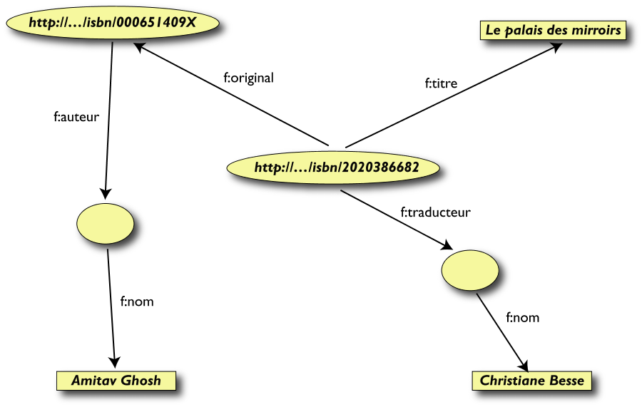
Terzo passo: Merging dei dati
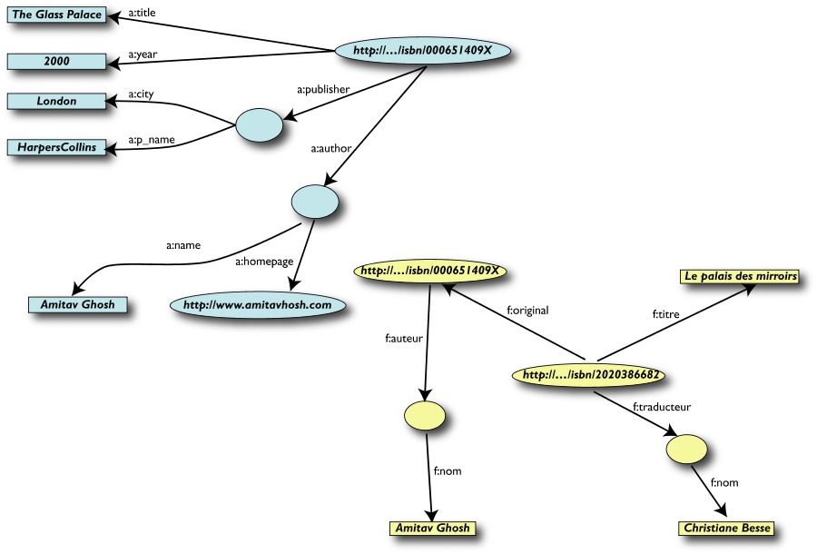
Terzo passo: Merging dei dati (cont.)
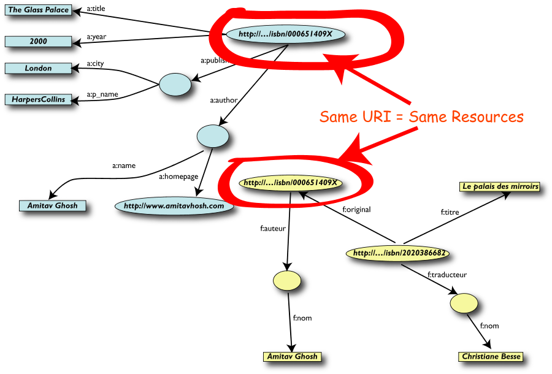
Merging delle risorse identiche

Le Query più semplici…
- L' utente dei dati "F" può ora formulare query
del tipo: "donnes-moi
le titre de l'original" o "give me the title of the
original"
- Questa informazione non è nel dataset
"F"…
- …ma può essere
ritrovata grazie al merging con il dataset "A"!
…ma si può avere di più
- Abbiamo la "sensazione" che
a:author e f:auteur siano la
stessa cosa
- Ma un processo automatico non se ne
può accorgere!
- Aggiungiamo un po' di informazione
addizionale ai dati combinati:
-
a:author same as f:auteur
- entrambi identificano una "Person", che
è un termine che una comunità
può aver già definito:
- una "Person" è definita
univocamente dal suo nome e email, o codice
fiscale
- può essere usato come
"categoria" per certi tipi di risorse
- e si può utilizzare la conoscenza extra
unendo altri grafi…
Sorpresi?
- Forse, ma in realtà no
- È esattamente quanto avviene normalmente a
tutti gli utenti del Web (ma in questo caso grazie a un
processo automatico)
- La differenza: è necessario un po'
più di rigore (per es. dare un nome alle
associazioni) perché le macchine possano
riuscirci.
In reltà cosa abbiamo fatto?
- Abbiamo combinato dataset diversi
- ognuno di essi può provenire da un
qualunque sito web
- possono avere originariamente formati
differenti (MySQL, fogli excel, XHTML, etc)
- possono avere nomi diversi per le
relazioni (multilinguismo)
- Li abbiamo potuti combinare perché avevano
lo stesso URI (l' ISBN nell' esempio)
- Possiamo aggiungere conoscenza addizionale,
utilizzando terminologie comuni definite dalle varie
comunità
- Di conseguenza, è stato possibile identificare
e utilizzare nuove relazioni
E il processo può essere anche più ricco
- La conoscenza addizionale può essere anche
molto complessa
- È qui che entrano in gioco le
ontologie, le regole, etc.
- Il processo di astrazione è
vantaggioso perché la rappresentazione come
grafo è indipendente dalle strutture dati
sottostanti
E il Semantic Web?
-
Il Semantic Web fornisce le tecnologie per rendere
possibile questa integrazione
- (il quadro dovrebbe essere chiaro
alla fine di questo tutorial)
L' architettura del Semantic Web

-
Il Semantic Web ...
-
- è un' infrastruttura basata su metadati
per poter svolgere ragionamenti sul Web
-
estende, non sostituisce il web attuale
-
I metadati sono:
-
- Informazioni, elaborabili automaticamente
(machine understandable), relative a una
risorsa web o a qualche altra cosa
- ... data about data
- ... informazioni che possono essere utilizzate da
intelligent software agents per fare un uso
appropriato delle risorse
- ... dati ...
- ... che possono essere descritti da altri
metadati ...
Perché i metadati?
- Nel Web di oggi tutte le informazioni sono "
machine readable"
- Nel Semantic Web le informazioni devono essere "
machine understandable". Quindi occorrono:
-
nomi non ambigui per le risorse (URI)
- un data model condiviso per esprimere i
metadati (RDF)
- un modo per accedere ai metadati sul Web
-
vocabolari condivisi (ontologie)
Elementi di RDF
Cosa è RDF?
- L' uso efficace dei metadati richiede la definizione
di convenzioni per:
-
semantica (definita dalle singole
comunità disciplinari)
-
sintassi (organizzazione dei data element
per l' elaborazione automatica)
-
struttura (vincolo formale sulla sintassi)
-
RDF:
-
Resource Description Framework
- strumento base per codifica,
scambio e riutilizzo di metadati
strutturati
- consente l' interoperabilità tra
applicazioni che si scambiano sul Web informazioni
machine-understandable
RDF è per il Semantic Web ciò che HTML
è stato per il web
Triple RDF
- Proviamo a formalizzare!
- abbiamo "collegato" i dati
- ma non basta collegare due informazioni, occorre
dare un nome al collegamento
- quindi le triple RDF sono: un un collegamento
etichettato (labelled connection) tra due
risorse
Triple RDF (cont.)
- Una tripla RDF (s,p,o) è definita in modo che:
- "s", "p" sono URI, cioè risorse sul Web;
"o" è un URI o un "literal"
- dal punto di vista concettuale: "
p"
collega, o mette in relazione
"s" e "o"
- si noti che vengono utilizzati URI per denotare i
nomi: per esempio, possiamo utilizzare
http://www.example.org/original
- ecco la codifica completa della tripla:
(<http://…isbn 6682>, <http://…/original>, <http://…isbn 409X>)
-
RDF è un modello generale per queste
triple (con un formato machine readable come RDF/XML,
Turtle, n3, RXR)
-
ed è tutto qui! (semplice, dopo tutto
)
Triple RDF (cont.)
- Le triple RDF sono anche dette "triplets", o
"statement"
- Le risorse
s, p,
o vengono anche dette:
"subject", "predicate",
"object",
oppure
"subject", "property",
"object"
- Le risorse possono usare un qualunque URI.
Per esempio, possono denotare un elemento
interno a un file XML sul Web, non solo una
risorsa "completa":
-
http://www.example.org/file.xml#xpointer(id('home'))
-
http://www.example.org/file.html#home
- Le triple RDF formano un grafo orientato
etichettato, o "directed, labelled graph"
(è questo il modo migliore per considerarle!)
Un esempio semplice di RDF (in RDF/XML)
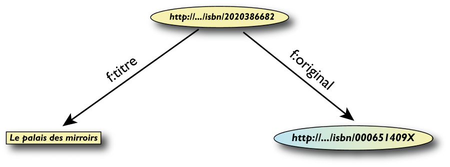
<rdf:Description rdf:about="http://…/isbn/2020386682">
<f:titre xml:lang="fr">Le palais des mirroirs</f:titre>
<f:original rdf:resource="http://…/isbn/000651409X"/>
</rdf:Description>
(Nota: per semplificare gli URI sono stati usati i
namespace)
Un esempio semplice di RDF (in Turtle)
<http://…/isbn/2020386682>
f:titre "Le palais des mirroirs"@fr;
f:original <http://…/isbn/000651409X>.
Quale sintassi?
- La sintassi (RDF/XML, Turtle) è semplicemente
sintassi
- La cosa importante sono il modello
sottostante e i concetti
- Non tratteremo in dettaglio gli aspetti sintattici
(abbiamo comunque già visto alcuni esempi in
Turtle e in RDF/XML)
- si tratta di trasformazioni meccaniche, ben
documentate e supportate da molti tool
Il ruolo fondamentale degli URI
- Gli URI hanno reso possibile il merge
-
Chiunque può creare (meta)dati su
qualunque risorsa sul Web, per esempio:
- lo stesso file XHTML può essere
annotato con altri termini
- è possibile aggiungere semantica
alle risorse Web esistenti utilizzando URI
- gli URI rendono possibile collegare (con
proprietà) i dati tra di loro
-
Gli URI sono la base del ruolo di RDF nel Web
- si può reperire l' informazione
utilizzando tool già esistenti
- per questo motivo il "Semantic Web", è il
… "Semantic Web"
Nodi "interni"
- Consideriamo lo statement:
- "l' editore è una "cosa" che ha
un nome e un indirizzo"
- Negli esempi precedenti, i nodi erano identificati da
URI. Ma…
- …qual è l' URI di "cosa"?
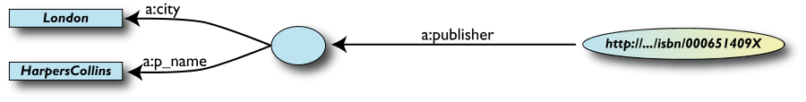
Extra URI … oppure … blank
nodes
RDFSchema
Perché RDF Schema?
- Alcune cose essenziali per descrivere la nostra "
conoscenza addizionale":
-
definire le "cose" che vogliamo descrivere
(istanze e classi)
- definire le eventuali restrizioni (es.
dominio e codominio)
-
relazioni addizionali (e
sottoproprietà)
- Questo è il ruolo di RDF Schema
- ufficialmente: "RDF Vocabulary Description
Language"
- il termine "Schema" sopravvive per
ragioni storiche…
Classi, Risorse, …
- Consideriamo un esempio classico delle ontologie:
- prendiamo il termine "cane"
- "ogni cane è un mammifero"
- "«Attila» è un cane"
- etc.
- RDFS definisce risorse e classi:
- qualunque cosa in RDF è una "risorsa"
- le "classi" sono risorse, ma…
- …sono anche collezione di possibili
risorse (quindi "individuals")
Classi, Risorse, … (cont.)
- Le relazioni sono definite tra classi/risorse:
- "typing": un individuo appartiene a una
specifica classe ("«Attila» è un
cane")
- per essere piùprecisi:
"
«anag:96RCI» is-an-instance-of
cane"
- "subclassing": le istanze di una classe
sono anche istanze dell' altra ("ogni cane è
un mammifero")
-
RDFS formalizza queste relazioni in RDF
Classi, Risorse in RDF(S)
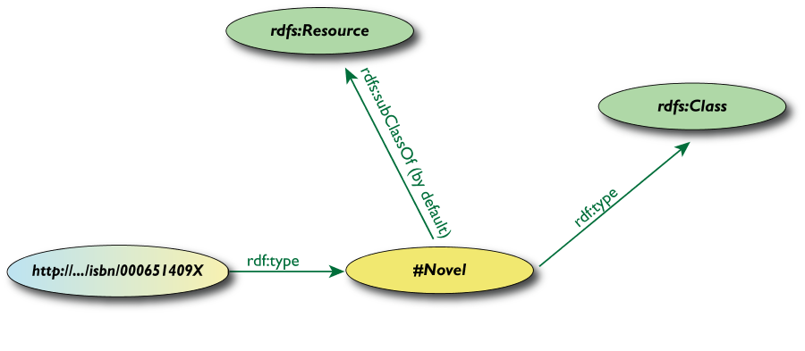
- RDFS definisce
rdfs:Resource,
rdfs:Class come nodi; rdf:type,
rdfs:subClassOf come proprietà
- (sono tutti URI speciali, usiamo
il namespace per semplicità)
-
rdfs:Class è la “classe
di tutte le classi” cioè qualunque
classe è un' istanza di rdfs:Class
Un esempio di RDFS in RDF/XML
- La parte dello schema:
<rdf:Description rdf:ID="Novel">
<rdf:type rdf:resource= "http://www.w3.org/2000/01/rdf-schema#Class"/>
</rdf:Description>
- I dati RDF per una specifica istanza:
<rdf:Description rdf:about="http://…/isbn/000651409X">
<rdf:type rdf:resource="http://…/bookSchema.rdf#Novel"/>
</rdf:Description>
- Nel KR tradizionale questi due componenti sono spesso
identificati come: "Terminological axioms" and
"Assertions" (
T-box e
A-box)
Inferenza delle proprietà
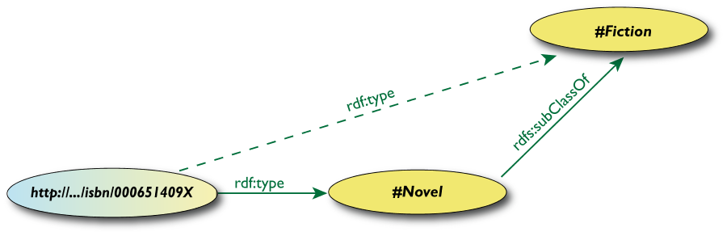
-
<http://…/isbn/000651409X> rdf:type
#Fiction>
-
non è nei dati RDF originali…
- …ma può essere dedotta dalle
regole RDFS
- I migliori ambienti RDF restituiscono anche questa
tripla
Proprietà
- Property è una classe speciale:
rdf:Property, che è la
“classe di tutte le
proprietà“
-
le proprietà sono anch' esse risorse,
identificate da URI
- La proprietà hanno dei vincoli di
dominio (domain) e codominio
(range)
- quali elementi (individual) possono comnparire
come object o subject
- È anche possibile definire delle
"
sub-property"
- tutte le risorse connesse da una sub-property
sono anche connesse dalla property
Proprietà (cont.)
-
Le proprietà sono anch' esse risorse,
identificate da URI…
- Quindi le proprietà di
proprietà possono essere espresse
come… RDF properties
- è una cosa un po' sofisticata, ma viene
usata spesso
- Per esempio,
(P rdfs:range C) significa
che:
-
P è una proprietà,
cioè un' istanza della classe
rdf:Property
-
C è una classe, cioè un'
istanza della classe rdfs:Class
- le risorse denotate dagli oggetti delle triple
che hanno come predicato
P sono
istanze della classe C
questo è uno statement RDF con subject
P, object C, e property
rdfs:range
Anche un po' di RDFS può dare enormi
vantaggi…
- Ritornando all' esempio iniziale del merge
- potremmo aver usato:
-
f:auteur subproperty-of
a:author e viceversa
- (ma vedremo che c'è un altro
modo per farlo…)
- In alcuni casi, è necessario gestire
conoscenza più sofisticata (vedi in
seguito…)
Alcune Classi e proprietà predefinite
- RDF(S) ha alcune classi e proprietà
predefinite
- Non sono "concetti" nuovi nel
RDF Model,
ma solo risorse con una semantica definita
- Esempi:
- collections (o liste)
- containers: sequence, bag, alternatives
- reification
-
rdfs:comment,
rdf:seeAlso, rdf:value
Ontologie (OWL)
Ontologie
- RDFS è utile, ma non è in grado di
soddisfare tutti i requisiti
- Applicazioni complesse hanno ulteriori
necessità:
- un programma può ragionare su
alcuni termini? Per es.:
- "if «Person» resources
«A» e «B» hanno la stessa
«foaf:email» property, then
«A» e «B» sono identici"
- se qualcun altro definisce un insieme di termini,
possiamo sapere se sono gli stessi già noti?
-
costruire classi, non limitarsi a dar loro
un nome
- restringere il codominio (range) di una
proprietà quando usata per una specifica
classe
- classi disgiunte o equivalenti
- etc.
Ontologie (cont.)
- Occorre il supporto di ontologie nel
Semantic Web:
"definisce i concetti e le relazioni usate per
descrivere e rappresentare un dominio di
conoscenza"
- Occorre un Web Ontology Languages
- RDFS può essere considerato un Web
Ontology Language semplice
-
OWL offre un insieme più ampio e
complesso di possibilità
- I linguaggi devono essere un compromesso tra:
- semantica ricca per applicazioni complesse
- fattibilità, implementabilità
Cos'è un' ontologia?
Jim Hendler
A set of knowledge terms, including the
vocabulary, the semantic interconnections and
some simple rules of inference and logic for
some particular topic
Studer et al. (1998)
An ontology is a formal, explicit specification of a
shared conceptualisation.
A 'conceptualisation' refers to an abstract
model of some phenomenon in the world by having
identified the relevant concepts of that
phenomenon.
'Explicit' means that the type of concepts
used, and the constraints on their use are explicitly
defined. For example, in medical domains, the concepts
are diseases and symptoms, the relations between them
are causal and a constraint is that a disease cannot
cause itself.
'Formal' refers to the fact that the ontology
should be machine readable, which excludes natural
language.
'Shared' reflects the notion that an ontology
captures consensual knowledge, that is, it is not
private to some individual, but accepted by a group.
Disaccordo o accordo?
- Definizioni diverse, ma accordo sul
concetto
- Un' ontologia include non solo i termini che sono
esplicitamente definiti in essa, ma anche la
conoscenza che ne può essere
derivata mediante un processo di
inferenza
- Un' ontologia cattura conoscenza consensuale
- "Little semantics goes a long way" (Jim
Hendler)
Il Semantic Web: la visione del W3C
-
Ipotesi e sfide
-
- il Web è intrinsecamente
distribuito
- le macchine possono accedere ad un insieme
strutturato di informazioni e a un insieme di
regole di inferenza da utilizzare per il
ragionamento automatico
- per ragionare sui dati occorrono le
ontologie
- fornire un linguaggio per esprimere dati
e regole per ragionare sui dati
-
esportare sul web delle regole da
qualunque sistema di rappresentazione della
conoscenza
-
Metadati
-
- informazioni, comprensibili dalla
macchina, relative a una risorsa web o a qualche
altra cosa
Ontologie sul Web
- Le ontologie sono sul Web. Quindi:
- le applicazioni possono utilizzare varie
ontologie differenti, oppure ... ...
- ... le stesse ontologie, ma espresse in lingue
diverse
- le equivalenze tra termini, e le relazioni
intercorrenti tra di loro, possono diventare un
problema non banale
Il Semantic Web: le tecnologie W3C
-
Resource Description Framework (RDF)
-
- strumento base per la codifica, lo
scambio e il riutilizzo di metadati
strutturati
- consente l'interoperabilità tra
applicazioni che si scambiano sul web informazioni
machine-understandable
-
Web Ontology Language (OWL)
-
- linguaggio per descrivere
proprietà, vincoli, cardinalità, etc.
- permette di esportare ontologie in modo
interoperabile
OWL: tre sottolinguaggi
-
OWL Lite
-
per rappresentare classificazioni gerarchiche
e vincoli semplici. Permette una migrazione
rapida per thesauri e altre tassonomie.
-
OWL DL
-
per utenti che desiderano la massima potenza
espressiva garantendo comunque la completezza
computazionale (tutte le conclusioni sono
computabili) e la decidibilità (tutte
le computazioni terminano in un tempo finito)
-
OWL Full
-
per utenti che desiderano la massima potenza
espressiva e la libertà sintattica di
RDF.
Non fornisce garanzie sui tempi di computazione, e
difficilmente sarà supportato nella sua
interezza da software che implementano il ragionamento
Relazioni di sottoclasse tra alcune primitive RDF/RDFS e
OWL
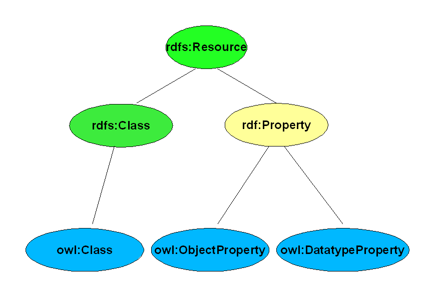
Le classi in OWL
- In RDFS, è possibile unicamente definire
sottoclassi di classi esistenti
- In OWL, si possono costruire classi a
partire da quelle esistenti:
- enumerazione
- intersezione, unione, complemento
- mediante restrizioni delle proprietà
(valori ammissibili, cardinalità, simmetria,
transitività, dipendenza funzionale)
- Per questo, OWL introduce i suoi elementi
Class e Thing per distinguere
le classi dalle istanze 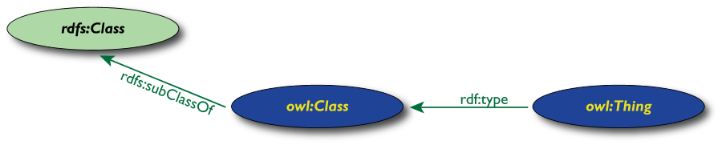
Caratterizzazione delle proprietà
- In OWL è possibile caratterizzare il
comportamento delle proprietà
(simmetrica, transitiva, dipendenza funzionale,
dipendenza funzionale inversa,…)
- OWL mantiene separate le proprietà dei dati
- "datatype property" significa che il codominio
è una costante tipata 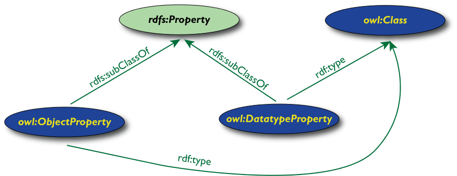
Object e Datatype Property
-
owl:ObjectProperty
-
- consentono di mettere in relazione tra di loro
gli oggetti (es.: possiede, insegna, etc.)
-
owl:DatatypeProperty
-
- consentono di mettere in relazione gli oggetti
con i valori (es. numeroDiTelefono, nome,
dataDiNascita, etc.)
- non esistono tipi predefiniti
- è possibile utilizzare i data type di XML
Schema, restando così aderenti all'
architettura a strati del Semantic Web
Caratterizzazione delle proprietà
-
owl:minCardinality
-
owl:maxCardinality
-
owl:SymmetricProperty
-
owl:TransitiveProperty
-
owl:FunctionalProperty
-
- ha al massimo un valore per ogni oggetto (es.
dataDiNascita, peso, nome)
-
owl:InverseFunctionalProperty
-
- proprietà per cui due oggetti diversi non
possono avere lo stesso valore (es.
èCodiceFiscaleDi, èNumeroDiMatricolaDi,
etc.)
Un esempio di caratterizzazione delle proprietà
- "foaf:email" è
inverse functional
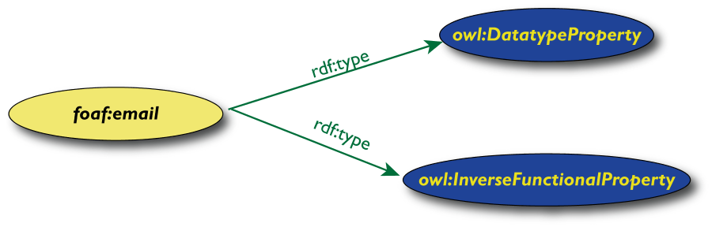
Equivalenza e Relazioni tra termini
- Per le classi:
-
owl:equivalentClass: due classi sono
costituite dagli stessi elementi
-
owl:disjointWith: non esistono istanze
in comune
- Per le proprietà:
-
owl:equivalentProperty
- abbiamo visto il caso di
a:author e f:auteur
-
owl:inverseOf: relazione inversa
- Per le istanze:
-
owl:sameAs: due URI fanno riferimento
alla stessa istanza (per es. un concetto)
-
owl:differentFrom: negazione di
owl:sameAs
Esempio: equivalenza inglese-francese
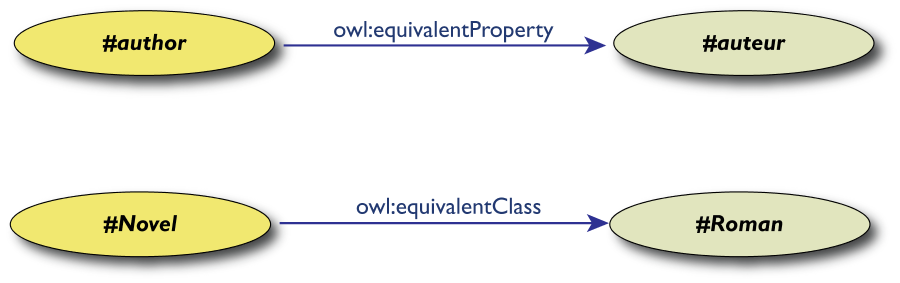
L' integrazione dei dati: il ruolo delle tecnologie

Conclusioni
- La rappresentazione della conoscenza è
essenziale per una elaborazione automatica delle
informazioni esistenti sul web
- Le tecnologie del Semantic Web (RDF, RDFS,
OWL) consentono di rappresentare,
esportare e condividere la conoscenza
in maniera interoperabile
-
Associatevi al W3C per
essere competitivi e attori dello sviluppo